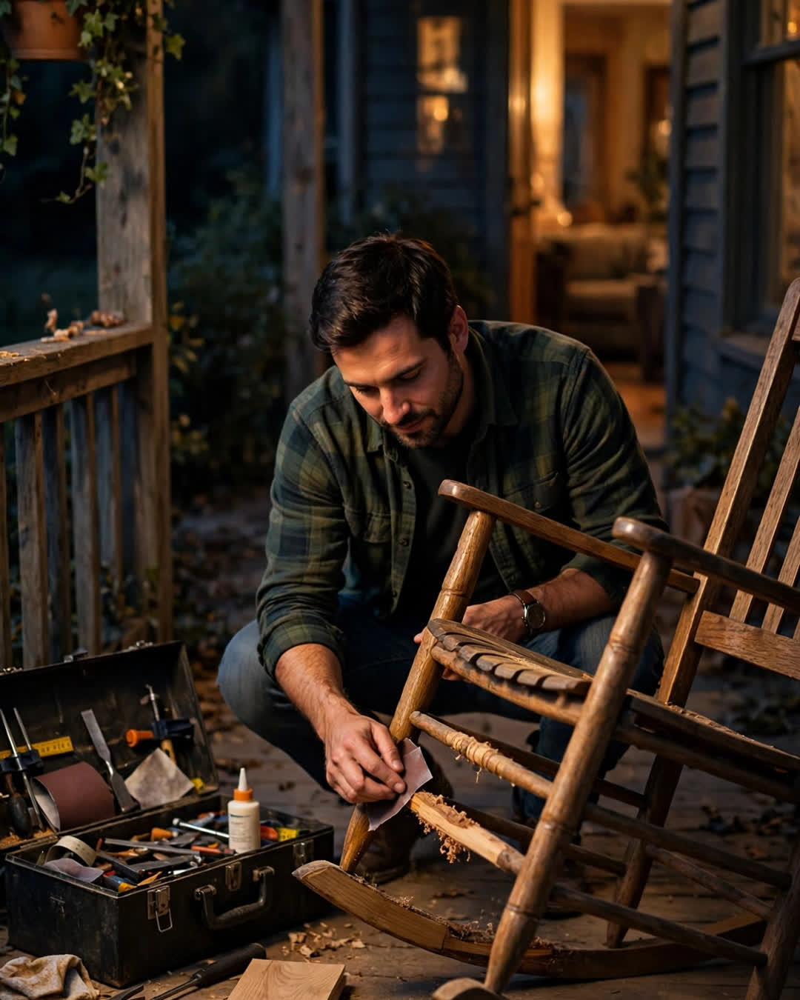

The Fixed Rocking Chair
A Clipp Kaili original story

My father-in-law's rocking chair sat broken on our porch for two years after he died — until the week I finally picked up his tools.
Earl Brennan was a man who could fix anything except, in the end, his own heart. He built that chair himself in 1989, out of oak, in a garage that smelled of sawdust and coffee, and for thirty years it was the most fought-over seat in his house. He rocked all four of his grandchildren to sleep in it. My wife, Claire, was rocked in it herself, a fact she would tell you within ten minutes of meeting her, the way other people mention hometowns.
When Earl passed, the chair came to us — his wish, written right into the list he left taped inside his toolbox lid. By then one of the rockers had split along the grain, and the whole chair leaned and clicked ominously when you sat in it. Claire couldn't bring herself to sit in it broken. She also couldn't bring herself to let anyone fix it, or throw it away, or even move it off the porch. Grief does that. It turns furniture into relatives.
So it sat. Through two winters of rain under the porch roof, it sat, and she said good morning to it with her coffee more mornings than she would ever admit.
I am not a craftsman. I want that on the record. I am an accountant who owns a drill he is slightly afraid of. But last fall, our daughter told us she was pregnant — the first grandchild — and I stood on that porch looking at Earl's broken chair and thought about a baby coming into a family where the best rocking chair in three generations was sitting outside like yard waste because the people who loved it were too sad to save it.
I did it at night, over five weeks, while Claire was asleep or at her sister's. I found Earl's toolbox in our garage, with his list still taped inside the lid, and underneath the tools, wrapped in a shop rag, a spare piece of oak the exact size of a rocker. He had cut it years ago. He had known the rocker would split someday. He had prepared the repair and left it for whoever loved his daughter enough to find it.
Under the oak, in pencil, on the rag itself, he had written: "Rockers wear out. Rock her anyway."
My hands shook so badly I had to sit down on the garage floor.
I steamed and glued and sanded, watching videos at 1 a.m. with the sound off. On the fifth week, at nearly midnight, I sat down in Earl Brennan's chair, in the dark of our porch, and rocked.
It creaked.
Not a new creak. His creak. The deep, slow, familiar complaint of oak that Claire had fallen asleep to as a baby, that her babies had fallen asleep to, a sound she had told me once, crying, that she would give anything to hear in the house again.
I went and got her. I didn't explain. I just took her hand, led her to the porch in her robe, and sat her down in her father's chair and pushed, gently, once.
The chair rocked. The chair creaked.
Claire put both hands over her face and sobbed, and then laughed through the sobbing, and rocked herself in her father's arms one more time, thirty years and one lifetime later.
Our granddaughter was rocked to sleep in that chair this spring, by her mother, with the creak keeping time like a heartbeat the family refused to lose.
A chair is just wood, until somebody loves in it.
Then it is an inheritance — and fixing it is how the living say to the dead: we heard you. We're still rocking.
This story is a work of fiction, written to touch hearts and bring families closer.
← Back to all stories